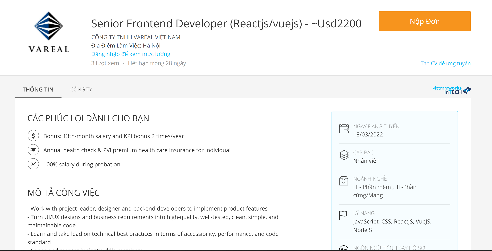
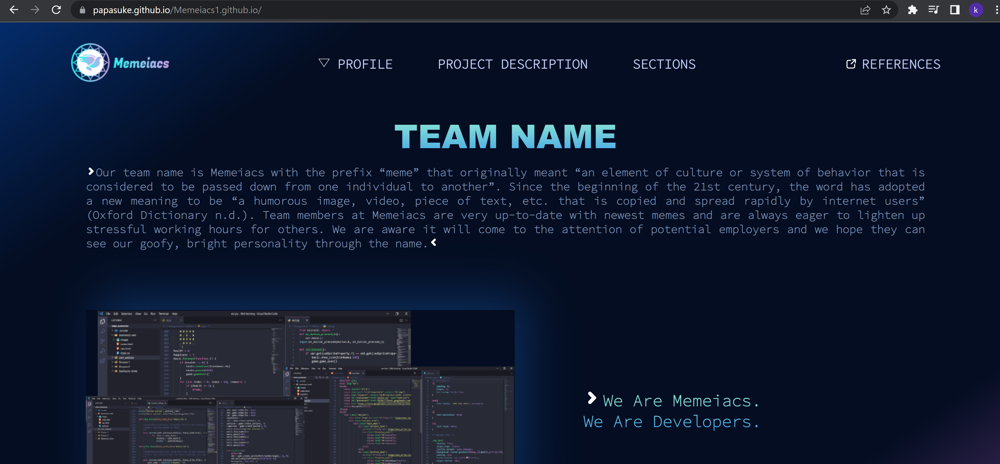

My achievements
My target
In truth, the job described above is not my ideal future employment since I want to work for a firm that promotes its online selling techniques in order to provide clients with the greatest alternatives for increasing profits, such as omnichannel selling methods. in order to achieve my goals The first thing I need to do is gather as much critical information as possible. expertise with online and mobile applications. This job provides all I require. better myself in preparation for long-term employment and collaboration with their needs CSS, HTML, and JavaScript Frameworks are examples. Furthermore, I may have more. chances to work on-site in another country based on the perks that have been agreed upon of the job posting website. It might be an opportunity to not only consolidate but also expand knowledge by collaborating with international colleagues. That is why I am interested in this position. challenge myself to get additional years of experience before taking on the real challenge of getting a job in my hoped-for company. CSS, HTML, and JavaScript Frameworks are examples. Furthermore, I may have more. chances to work on-site in another country based on the perks that have been agreed upon of the job posting website
Achieved targets
It might be an opportunity to not only consolidate but also expand knowledge by collaborating with international colleagues. That is why I am interested in this position. challenge myself to get additional years of experience before taking on the real challenge of getting a job in my hoped-for company CSS, HTML, and JavaScript Frameworks are examples. Furthermore, I may have more. chances to work on-site in another country based on the perks that have been agreed upon of the job posting website. Those activities, I believe, will serve as my basis for gaining additional opportunities to apply for jobs.
Portfolio
Find my portfolio here: Github Click here
The video below is my team presentation. It will help to demonstrate how our project run and use real time to calculate estimate time that the spaceship reachs the Mars from Earth.
Published website using Github Click here
I have tried to learn more about website to integrate as many as possible effects to make our team page become more attractive.